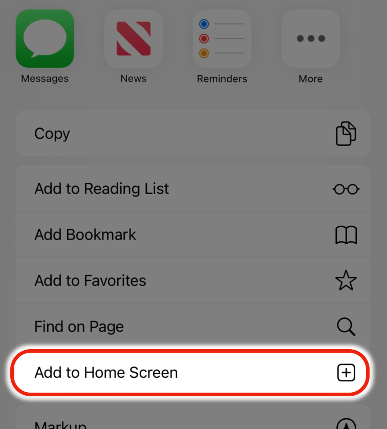

Play together, anywhere
Online lobbies
Browse public lobbies, use Quick Join, or share a 6-digit code for a private game. It works without router settings or port forwarding.
Browser and Windows
Browser players and Windows players meet in the same lobbies and play the same game.
Up to four players
Everyone gets their own screen, controller and character, chosen in the lobby.
Your data stays yours
Your ROM and save data never leave this browser. Public lobbies never show your IP address to other players.
Getting started
- Open the game. Press Play now. The first start downloads about 13 MB; later starts are quicker.
- Choose your ROM. Select your
Sonic_Knuckles_wSonic3.binfile when asked. It is kept in this browser, so you only do this once. - Go online. Pick Online Lobby in the main menu, then create a lobby, use Quick Join, or enter a friend's code.
About online play
The free server goes to sleep after about 15 minutes without players. If you are the first one in a while, the game shows "Waking the server up" for up to a minute; if it gives up, press the button again.
- Players meet through a relay server that keeps the lobby list and forwards the game. The game comes with its address already filled in.
- In a private lobby (joined with its code), two browsers may connect to each other directly for lower latency. This shows each player's IP address to the other, so it is never used in public lobbies. To turn it off completely, open the game as
sonic3air_web.html?p2p=off. - To play with Windows players, everybody needs the same game version, and Windows players switch mods off.
- Want to use your own server? Open the game as
sonic3air_web.html?relay=wss://your-server, or set it under Relay Server in the online menu.
Good to know
The browser version is a beta. It has fewer features than the Windows version, and you may run into problems.
- Files and saves. A basic file manager is in the Options menu (on a computer you can also right-click in the game and choose Open mods folder or Open saved data folder). Use it to upload mods (one file at a time; .zip mods are supported) and to back up your saves or bring them over from the PC version.
- Remastered soundtrack. It is not included, because everything has to fit into memory and it would add over 100 MB. You can download it from the Options menu, or upload
audioremaster.binfrom the PC version through the file manager. If the game becomes unstable afterwards, delete that file again. - New versions are downloaded in full, just like on PC.
- Known issues of the original browser and iOS port are listed in its to-do list.
Install on iPhone or iPad
Requires iOS 13 or later. On older devices, you may still be able to play in Safari with the Play now link.
- Open this page in Safari on the device.
- Tap the Share button
 in the toolbar.
in the toolbar. - Choose Add to Home Screen.
- Open the new Sonic 3 AirNet app from your home screen.
- When the first download has finished, select your
Sonic_Knuckles_wSonic3.binfile. It is copied into the app's save data, so you only do this once.
Keep the device awake during the first download; if it goes to sleep, close the app and open it again.
